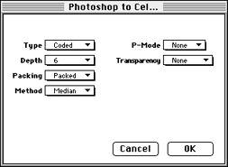
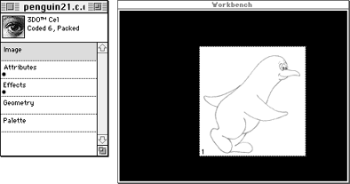

Converting to a single cel
This section shows you how to convert a single Photoshop 2.5 file to a 3DO
cel. Photoshop 2.0 files are also supported. Photoshop grayscale files of
any type are not currently supported.
Warning: Converting a file to an uncoded 16-bit cel can cause the
program to crash. Choose another cel type.
Follow these steps:
- Launch Photoshop and open the desired file.
- Scale or resize to a reasonable size. The standard NTSC screen size,
320 x 240 pixels, is recommended, but a cel can be larger.
- If necessary, change the file to RGB color.
- Save the file in Photoshop 2.5 format.
- Launch 3DO PostPro.
- From the File menu, select Open and open the desired file.
A Document window appears for the selected file.
- Select Convert to from the Document menu, then pull right and select
3DO cel from the submenu, (see Figure 1).

Figure 1: Convert to 3DO cel submenu.
Note: The Convert to 3DO Texture option is not currently
supported.
- Select the options for the cel type you want from the Photoshop to Cel
dialog, and Click OK. Figure 2 shows the settings for a coded-6 cel.

Figure 2: Photoshop to Cel dialog
- Type the name for the file in the Save As dialog. Using a .cel
extension is helpful for future reference. The file is saved as a 3DO cel file.
- Drag the Document Proxy from the Document window onto the Workbench.
The cel is displayed (see Figure 3).

Figure 3: File converted to 3DO cel format.